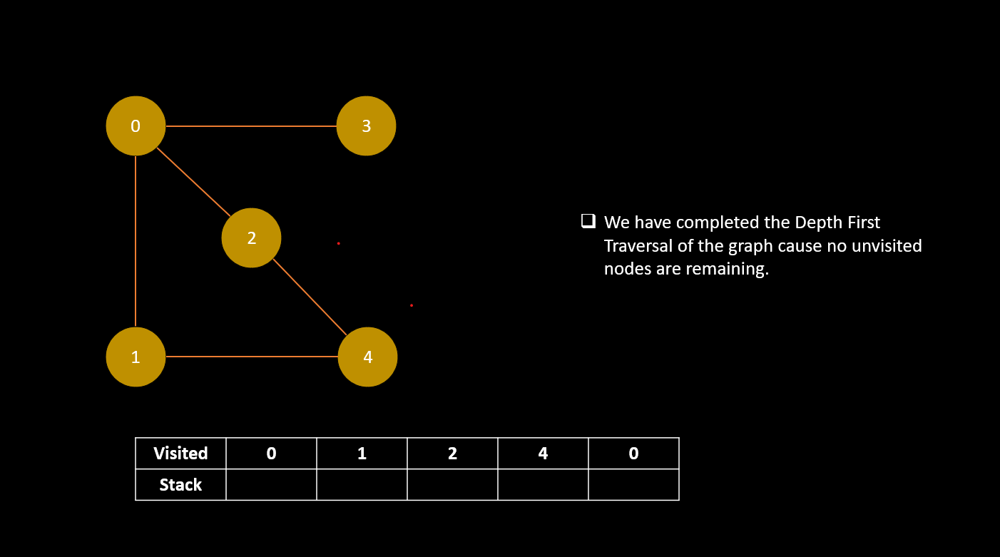

Depth-First Search (DFS)
Depth-First Search (DFS) is a graph traversal algorithm that starts at the root node and explores as far as possible along each branch before backtracking.
In other words, it visits nodes as deep as possible before visiting their siblings. This algorithm is used to visit all the vertices of a graph or all the nodes of a tree.
Algorithm
The algorithm can be implemented using either recursion or a stack. The basic idea is to visit a vertex, mark it as visited, and then explore each adjacent vertex that has not been visited yet. When there are no more adjacent vertices to explore, the algorithm backtracks to the previous vertex and continues exploring from there.The steps for the DFS algorithm are as follows:
1. Start at the root node and mark it as visited.
2. Explore each adjacent vertex that has not been visited yet.
3. If there are no more adjacent vertices to explore, backtrack to the previous vertex.
4. Repeat the process until all vertices have been visited.
Example
Consider the following graph:


CP Problem:
The DFS algorithm can be implemented using either recursion or a stack. Here is an implementation using a stack:
Solution :
Source Code

Watch the video for understande more-